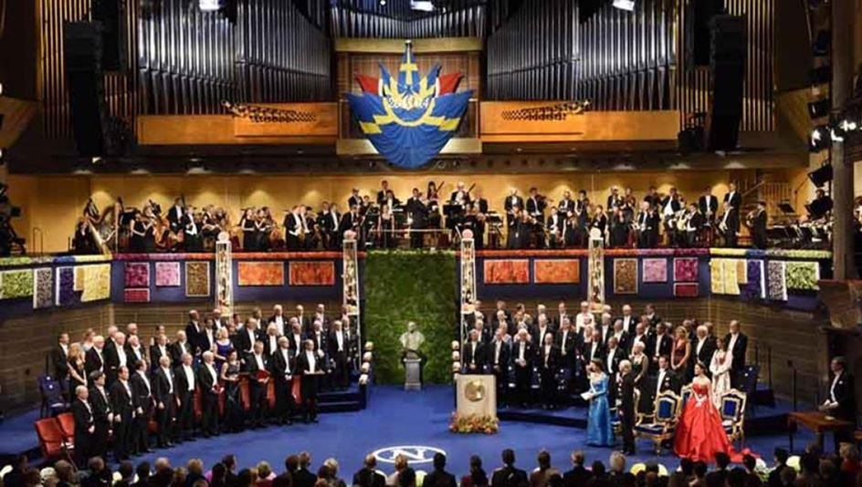
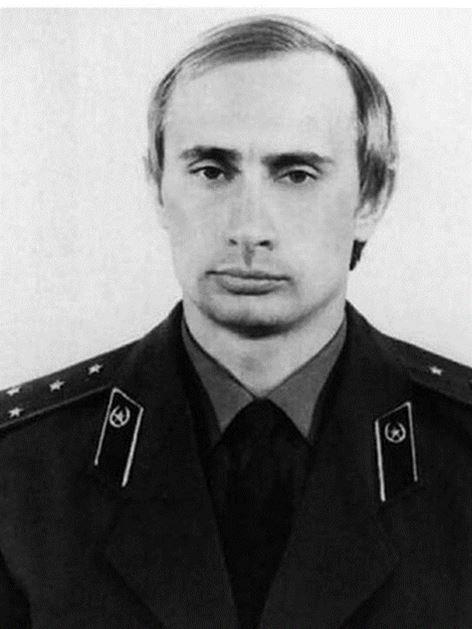

La pensée, aidée en cela par les contingences de la vie quotidienne, procède généralement pragmatiquement par oppositions. D’une part, elle établit des distinctions exclusives qui peuvent sembler naïves ; d’autre part, elle a tendance à renforcer ces exclusives en obligeant à choisir l’une ou l’autre des deux propositions. Si on tente d’appliquer ce mode de pensée à certaines réalités politiques contemporaines, on obtient toutefois le tableau paradoxal suivant.
De deux choses l’une. Ou bien le prix Nobel de la paix doit être attribué, toutes affaires cessantes, à M. Poutine (1952–) car, à l’instar de luminaires politiques tels que MM. Kissinger, Carter et Obama, son impérialisme atavique mérite d’être récompensé par les oligarques occidentaux, tout ébaudis d’un tel caractère martial, aussi trempé dans le fiel du KGB que celui de G. H. W. Bush le fut dans le miel de la CIA. C’est l’option des néoconservateurs eux-mêmes, qui donneraient beaucoup pour placer un tel personnage à la tête de l’État US-américain. Il n’est pas nécessaire de revenir ici sur l’évidente validité de cette opinion, partagée par la totalité de la communauté internationale.
Ou bien le prix Nobel de la paix doit être attribué à M. Poutine car il est une des rares créatures politiques à combattre becs et ongles pour la paix, la démocratie et les droits humains. Efficace, fiable, créatif, visionnaire et d’une probité exemplaire, M. Poutine rassemble des qualités que l’on ne retrouve que très rarement chez nos contemporains et quasiment jamais chez les politiques. MM. Castro, Chavez, Morales, Correa sont, à cet égard, exceptionnels. (Qui peut-on leur opposer en Belgique ou en France ? Léopold II ? De Gaulle ?) C’est l’opinion des humanistes qui, fidèles à leurs idéaux renaissants, analysent les événements mondiaux à l’aune de l’Un, du Vrai et du Bon. Un certain nombre de faits peuvent être revisités de ce point de vue, qui, il faut bien le dire, s’avère caractériser les pays qui sont au ban de la communauté internationale, c’est-à-dire, moins lyriquement, les pays qui n’appartiennent pas à la sphère OTAN (voir Chomsky). Que peut-on alors dire de la gestion de la crise ukrainienne par la Russie de M. Poutine ?
Remarquons tout d’abord que le KGB — et tout particulièrement le renseignement extérieur du KGB auquel a appartenu M. Poutine — constituait un service secret organiquement différent de la CIA. Alors que les membres du KGB se distinguaient par une loyauté absolue au peuple et à la nation soviétiques (mais pas nécessairement au parti communiste et à l’idéologie marxiste-léniniste), les membres de la CIA semblent plus enclins à cultiver une loyauté absolue envers l’oligarchie et l’idéologie libérale-capitaliste qu’à œuvrer pour la sécurité de leurs concitoyens.
Sauf erreur, les patriotes US-américains sont plutôt à dénombrer parmi les militaires.
Rappelons ensuite que la fondation de la Russie eut lieu au IX° siècle… à Kiev. Même si des différences subsistent entre les racines culturelles spécifiquement ukrainiennes et russes, la profondeur historique de ces liens existentiaux est indéniable et elle doit informer toute discussion des événements « euromaïdan ».
En Occident, il n’est plus ouvertement question de colonialisme depuis 1946, ce qui ne veut pas dire pour autant que l’esprit du colonialisme ait disparu. On peut d’ailleurs prétendre que l’esprit du colonialisme et l’esprit du capitalisme ne font qu’un. Le « droit d’ingérence » (1979) a d’abord été sollicité pour obtenir, idéologie de la mondialisation aidant, le même résultat colonial ; puis vint le « devoir d’ingérence » (1980) ; et, dernièrement, la « responsabilité de protéger » les populations mises en danger par leur propre gouvernement (2001). Tout ceci est resté assez nébuleux jusqu’en 2013. Les modalités de cet interventionnisme déstructurant ont en effet gagné en transparence avec les événements ukrainiens, ce qui a permis au surplus un éclairage rétrospectif sur les dernières guerres « printanières », soit la Libye (2011) et la Syrie (2011). Épinglons trois faits qui ont réussi à acquérir une certaine visibilité médiatique dans la zone OTAN1: la conférence de Victoria Nuland lors de laquelle elle vante les efforts financiers consentis par les USA pour « démocratiser » l’Ukraine, soit un investissement de cinq milliards de dollars depuis 1991 2; le coup de téléphone entre la même V. Nuland et l’ambassadeur des USA à Kiev, Geoffrey Pyatt, qui rend évident l’ingérence dans les affaires intérieures d’un État souverain et plus particulièrement les tentatives de pilotage pur et simple de la « révolution » 3; le coup de téléphone entre Catherine Ashton et le ministre des affaires étrangères estonien Urmas Paet, qui établit que des tireurs d’élite ont créé le massacre populaire pour l’imputer aux forces de police 4. En fait, les mêmes « snipers » ont pris pour cible les manifestants et les forces de l’ordre, dans le but évident de faire flamber la violence et de précipiter le coup d’État.
La question est toujours la même : à qui profite le crime ? (Cui bono ?) Une brève réflexion éclairée par ces faits permet, à défaut de saisir toutes les modalités de la stratégie des différents acteurs en présence, d’en comprendre la visée. Les enjeux géopolitiques peuvent être appréhendés de diverses manières, mais toutes convergent vers un point focal : l’endiguement de la Russie comme première étape à sa démolition contrôlée par la « communauté internationale ». Le coup d’État orchestré à Maïdan par l’Ouest était censé garantir de nombreux résultats remarquables et immédiats : la destruction de la coopération Ukraine/Russie, l’acquisition à vil prix des terres arables du Nord-Est 5, la maîtrise des gazoducs qui alimentent le marché européen et la prise de territoires très prometteurs pour la fracturation hydraulique (en continuité avec les formations géologiques polonaises, ces territoires constituent le seul vrai potentiel européen en la matière). Si la paralysie de la société ukrainienne n’était pas acquise rapidement sur le mode de la stratégie du choc (voir N. Klein interprétant le coup de Pinochet), elle le serait dans le court terme et, à défaut, une guerre civile ne peut que permettre la prédation totale des ressources convoitées. Si les Russes étaient entraînés dans la guerre, le scénario afghan se reproduirait nécessairement à leur détriment. Face je gagne, pile tu perds.
Tout ceci est très grave et excessivement embarrassant pour la Russie, mais d’un point de vue géopolitique, seuls deux faits sont vraiment dirimants : la volonté d’expulsion de la Russie de sa base navale de Sébastopol (et de ses substructures à Mykolaiv, Kacha et Gvardeyskoye) et la tentative d’appropriation des technopôles de l’Est de l’Ukraine et plus particulièrement de l’industrie militaire et aérospatiale de pointe.
Premièrement, le référendum d'autodétermination qui s'est tenu le 16 mars 2014 a résolu le problème criméeen de manière très élégante, sans aucune effusion de sang. A propos de l’illégalité du retour de la Crimée à la Russie, Jacques Sapir propose (avec d’autres) l’alternative suivante. Ou bien il y a eu une révolution suite aux événements de Maïdan et la Constitution est suspendue, de facto si pas de jure, et plus rien ne lie la Crimée à l’Ukraine. Ou bien il n’y a pas eu de révolution et les prétentions politiques de l’équipe au pouvoir sont nulles et non avenues tandis que nous devons reconnaître M. Ianoukovitch comme le Président légal de l’Ukraine. Plus fondamentalement, il existe ce qu’on appelle volontiers depuis la décolonisation le « droit des peuples à disposer d’eux-mêmes » et une déclaration unilatérale d’indépendance est permise par la loi internationale (International Court of Justice, Summary of the Advisory Opinion 2010/2, 22 July 2010) — mais il est vrai que certains commentateurs soulignent qu’il n’y a simplement pas de loi internationale en la matière et que la Charte des Nations Unies est très claire à ce propos.
Deuxièmement, la protection des pôles industriels de pointe de Dniepropetrovsk, Donetsk, Zaporozhye, Snezhnoye, Volochisk, sans oublier Kharkov, où est sise l’Université nationale de l'aéronautique et aérospatiale, est toujours en chantier et on ne peut que s’interroger sur le degré de désinformation, de cupidité, et d’idiotie politique des responsables occidentaux quand ils ont cru — et affectent de continuer à croire — que la Russie peut se permettre de perdre du jour au lendemain non seulement sa base navale mais également de subir une telle amputation du potentiel de son industrie de la défense (on parle d’une perte de vingt à trente pour cent). Cliniquement, on est dans le délire paranoïaque aigu.
Qu’en est-il de la tactique employée ? Pour simplifier, elle est double. D’une part, les « démocraties » occidentales financent (à hauteur de cinq milliards de dollars, nous l’avons appris) la multiplication des organismes non gouvernementaux favorisant la propagation des idées néolibérales en faisant miroiter le niveau de vie d’une classe moyenne qui est pourtant en voie de disparition chez nous. Ces organismes sont généralement autant de faux-nez des agences de renseignement. D’autre part, les mêmes « démocraties » procèdent à l’encerclement militaire systématique de toutes les puissances (possiblement) émergentes et occupent militairement les territoires requis pour ce faire. Le colonialisme US-américain, c’est bien de lui qu’il s’agit, remonte à la doctrine Monroe (1823) ; pour les besoins de notre discussion, il suffira de rappeler la doctrine Wolfowitz (1992) et ses fondements idéologiques brzezinskiens (1997), fondements qui ont été promptement transcrits dans le Rebuilding America’s Defenses du Project for the New American Century (2000), le manifeste de la présidence Bush Jr.
La doctrine Wolfowitz, qui fut dévoilée dans le New York Times du 8 Mars 1992, stipule simplement que tout État assez fort pour rester indépendant, c’est-à-dire pour ignorer les injonctions de Washington, doit être considéré comme « hostile ». En toile de fond de cette idéologie guerrière se trouve l’œuvre de Zbigniew Brzezinski, qui publie en 1997 The Grand Chessboard, sous-titré American Primacy and Its Geostrategic Imperatives, une monographie en gestation depuis 1978 et offrant, avec un cynisme absolu, la meilleure description de la stratégie impériale américaine (il va en effet jusqu’à planifier la division de la Russie en trois entités).
Exemplifier cela est très facile. L’OTAN est créée en 1949 pour se prémunir du Pacte de Varsovie (créé en 1955) ; avec la chute du Mur en 1989, l’alliance perd définitivement toute raison d’être et Jack F. Matlock, ambassadeur des États-Unis à Moscou de 1987 à 1991, a (diplomatiquement) confirmé que G. H. W. Bush avait formellement promis de ne pas étendre l’OTAN vers l’Est (Washington Post, March 14, 2014). On sait maintenant ce qu’il en fut : tous les pays membres du Pacte de Varsovie, hormis la Russie, ont été intégrés dans l’OTAN et agrémentés de bases états-uniennes ; en 2001 les USA se sont unilatéralement soustraits au traité ABM, signé en 1972, afin de mettre en place en Europe de l’Est un « bouclier anti-missiles » qui n’a d’autre but que de permettre une première frappe destinée à neutraliser la Russie (qui peut croire à la menace iranienne ou nord-coréenne ?) ; l’invasion de l’Iraq a été arrêtée sans mandat onusien (2003) ; les révolutions « colorées » (ou « révolutions des fleurs ») ont été téléguidées en Yougoslavie (2000), en Géorgie (2003), au Liban (2005), au Kirghizistan (2005)… puis il y eut les agressions contre la Libye (2011) et la Syrie (2011).
Rétrospectivement, on ne peut donc que s’étonner de la patience et de l’inébranlable bonne volonté russes. Dernièrement encore, en novembre 2013, M. Poutine plaidait pour des négociations tripartites avec l’Union européenne et l’Ukraine afin d’établir des accords de libre-échange, soulignant que l’Ukraine constituait le pont naturel entre l’Est et l’Ouest. La réponse des européens — c’est-à-dire des US-américains — fut très claire : pour Catherine Ashton, David O’Sullivan et Stefan Füle, l’Ukraine devait choisir entre l’Union européenne et la Fédération de Russie 6.
Si on écoute ce que dit M. Poutine, on est frappé par son attachement aux fondements du droit international tels qu’ils furent établis par les Traités de Westphalie (1648). Trois principes, présupposant l’égalité juridique entre les États-nations, doivent être respectés : la souveraineté absolue de l’État-nation et donc le droit à l’autodétermination politique ; le respect des traités internationaux ; et la non-ingérence dans les affaires intérieures des autres États. L’histoire nous apprend qu’on ne peut malheureusement rien attendre d’une nation qui s’est construite sur le viol de la totalité des quelques quatre cents traités signés avec les peuples indigènes (les « indiens »)… (Zinn, A People’s History of the United States, 1980, p. 526) Il faut espérer que les Russes l’ont compris et, surtout, que les Européens se positionneront en conséquence dans un monde travaillé plus ou moins explicitement par l’imminence de l’effondrement écologique.
M.W.
NOTES ET RÉFÉRENCES
1. pour être aussitôt noyé dans une propagande guerrière appropriée.
2. U.S.–Ukraine Foundation, Gala « Ukraine in Washington », 13 décembre 2013.
3. 6 février 2014.
4. 25 février 2014.
5. les fameuses « terres noires.»
6. Andreï Gratchev, « L'Europe a eu tort de ne pas associer Moscou à son partenariat oriental », Le Monde, 05.03.2014.
Partager cette page